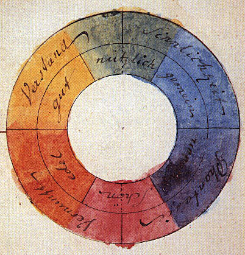
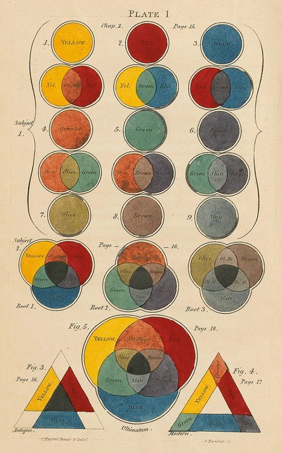

History
Color theory is rooted in antiquity, with early musings on color in Aristotle's (d. 322 BCE) On Colors
and Claudius Ptolemy's (d. 168 CE) Optics. The influence of light on color was investigated and revealed
further by al-Kindi (d. 873) and Ibn al-Haytham (d. 1039). Ibn Sina (d. 1037), Nasir al-Din al-Tusi (d.
1274), and
Robert Grosseteste (d. 1253) discovered that contrary to the teachings of Aristotle, there are multiple
color paths to get from black to white. More modern approaches to color theory principles can be found
in the writings of Leone Battista Alberti
(c. 1435) and the notebooks of Leonardo da Vinci (c. 1490).
Goethe's color wheel from his 1810 Theory of Colours
The RYB primary colors became the foundation of 18th-century theories of color vision, as the
fundamental
sensory
qualities that are blended in the perception of all physical colors, and conversely, in the physical
mixture
of
pigments or dyes. These theories were enhanced by 18th-century investigations of a variety of purely
psychological
color effects, in particular the contrast between "complementary" or opposing hues that are produced
by
color
afterimages and in the contrasting shadows in colored light. These ideas and many personal color
observations were
summarized in two founding documents in color theory: the Theory of Colours (1810) by the German
poet
Johann
Wolfgang von Goethe, and The Law of Simultaneous Color Contrast (1839) by the French industrial
chemist
Michel
Eugène Chevreul. Charles Hayter published A New Practical Treatise on the Three Primitive Colours
Assumed as
a
Perfect System of Rudimentary Information (London 1826), in which he described how all colors could
be
obtained from
just three.

Page from 1826 A New Practical Treatise on the Three Primitive Colours Assumed as a Perfect System
of
Rudimentary
Information by Charles Hayter
Subsequently, German and English scientists established in the late 19th century that color
perception
is best
described in terms of a different set of primary colors—red, green and blue-violet (RGB)—modeled
through
the
additive mixture of three monochromatic lights. Subsequent research anchored these primary colors in
the
differing
responses to light by three types of color receptors or cones in the retina (trichromacy). On this
basis
the
quantitative description of the color mixture or colorimetry developed in the early 20th century,
along
with a
series of increasingly sophisticated models of color space and color perception, such as the
opponent
process
theory.

Across the same period, industrial chemistry radically expanded the color range of lightfast
synthetic
pigments,
allowing for substantially improved saturation in color mixtures of dyes, paints, and inks. It also
created the
dyes
and chemical processes necessary for color photography. As a result, three-color printing became
aesthetically
and
economically feasible in mass printed media, and the artists' color theory was adapted to primary
colors
most
effective in inks or photographic dyes: cyan, magenta, and yellow (CMY). (In printing, dark colors
are
supplemented
by black ink, known as the CMYK system; in both printing and photography, white is provided by the
color
of the
paper.) These CMY primary colors were reconciled with the RGB primaries, and subtractive color
mixing
with
additive
color mixing, by defining the CMY primaries as substances that absorbed only one of the retinal
primary
colors:
cyan
absorbs only red (-R+G+B), magenta only green (+R-G+B), and yellow only blue-violet (+R+G-B). It is
important to
add
that the CMYK, or process, color printing is meant as an economical way of producing a wide range of
colors for
printing, but is deficient in reproducing certain colors, notably orange and slightly deficient in
reproducing
purples. A wider range of colors can be obtained with the addition of other colors to the printing
process, such
as
in Pantone's Hexachrome printing ink system (six colors), among others.
 Munsell's 1905 color system represents colors using three color-making attributes, value
(lightness),
chroma,
and
hue.
For much of the 19th century artistic color theory either lagged behind scientific understanding or
was
augmented by
science books written for the lay public, in particular Modern Chromatics (1879) by the American
physicist Ogden
Rood, and early color atlases developed by Albert Munsell (Munsell Book of Color, 1915, see Munsell
color
system)
and Wilhelm Ostwald (Color Atlas, 1919). Major advances were made in the early 20th century by
artists
teaching
or
associated with the German Bauhaus, in particular Wassily Kandinsky, Johannes Itten, Faber Birren
and
Josef
Albers,
whose writings mix speculation with an empirical or demonstration-based study of color design
principles.
Munsell's 1905 color system represents colors using three color-making attributes, value
(lightness),
chroma,
and
hue.
For much of the 19th century artistic color theory either lagged behind scientific understanding or
was
augmented by
science books written for the lay public, in particular Modern Chromatics (1879) by the American
physicist Ogden
Rood, and early color atlases developed by Albert Munsell (Munsell Book of Color, 1915, see Munsell
color
system)
and Wilhelm Ostwald (Color Atlas, 1919). Major advances were made in the early 20th century by
artists
teaching
or
associated with the German Bauhaus, in particular Wassily Kandinsky, Johannes Itten, Faber Birren
and
Josef
Albers,
whose writings mix speculation with an empirical or demonstration-based study of color design
principles.